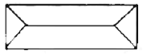

실내건축기능사 (2007-01-28 기출문제)
1과목: 실내디자인
1. 면의 의미에 대한 설명 중 맞는 것은?
- 면은 점이 이동한 궤적이다.
- 입체의 한계나 공간의 경계에서 나타난다.
- 절단된 면에서 또 다른 형의 면이 지각되지 않는 다.
- 점을 확대 또는 집합시킨 경우나 선을 집합시킨 경우 점이나 선으로 지각되지 않으면 면으로도 지각되지 않는다.
(정답률: 52%)

2. 다음 중 냉 난방상 가장 유리한 출입문의 종류는?
- 미서기문
- 여닫이문
- 회전문
- 미닫이문
(정답률: 66%)
3. 다음 중 황금 분할비의 비율로 맞는 것은?
- 1:1.414
- 1:1.313
- 1:1.732
- 1:1.618
(정답률: 90%)
4. 다음 조명 기구 중에서 식사실의 식탁 위에 가장 많이 사용하는 조명 기구는?
- 브라켓
- 펜던트
- 플로어 스탠드
- 테이블 스탠드
(정답률: 72%)
5. 상점 기본 계획시 상점구성의 방법(AIDMA법칙)과 맞지 않는 것은?
- A : Attention (주의)
- I : Interest (흥미)
- D : Desire (욕망)
- M : Money (금전)
(정답률: 78%)
6. 주거공간 실내계획시 고려사항으로 가장 거리가 먼 것은?
- 기후
- 위치
- 디자인 스타일
- 주변 도로폭
(정답률: 83%)
7. 실내 투시도에 있어서 소점의 위치를 바르게 설명한 것은?
- 눈의 높이보다 아래쪽에 위치한다.
- 눈의 높이보다 위쪽에 위치한다.
- 눈의 높이와 같은 선상에 위치한다.
- G.L 선상에 위치한다.
(정답률: 71%)
8. 실내디자인의 원리 중 황금분할과 관계되는 것은?
- 통일성
- 강조
- 비례
- 리듬
(정답률: 92%)
9. 공간을 형성하는 수평적 요소로서 그 형태에 따라 실내 공간의 음향에 가장 큰 영향을 미치는 것은?
- 천장
- 벽
- 바닥
- 기둥
(정답률: 59%)
10. 디자인요소 중 선의 설명으로 옳지 않은 것은?
- 선은 길이의 개념은 있으나 깊이의 개념은 없다.
- 입체의 절단에 의해서도 만들어 진다.
- 너비가 넓어지면 면이 된다.
- 선의 패턴으로 운동감, 속도감, 방향 등을 나타낸다.
(정답률: 63%)
11. 휴먼스케일에서 실내 크기를 측정하는 기준은?
- 공간의 형태
- 인간
- 공간의 넓이
- 가구의 크기
(정답률: 79%)
12. 주거공간의 동선에 관한 설명으로 옳지 않은 것은?
- 동선은 짧을수록 에너지 소모가 적다.
- 주부동선은 길수록 좋다.
- 동선을 줄이기 위해 다른 공간의 독립성을 저해해서는 안된다.
- 거실이 주거의 중앙에 위치하면 동선을 줄일 수 있다.
(정답률: 100%)
13. 디자인 원리 중 대칭이 갖고 있는 성질이 아닌 것은?
- 완벽함
- 엄숙함
- 해방감
- 고요함
(정답률: 67%)
14. 유통매장의 동선계획에서 길수록 효율이 좋은 것은?
- 관리동선
- 고객동선
- 판매원동선
- 상품반출의 동선
(정답률: 85%)
15. 평면계획에서 가장 중요하게 다루어져야 할 내용은?
- 벽면의 색채와 질감을 아름답게 표현한다.
- 실의 크기와 실의 배치에 따라서 공간을 배치한다.
- 지붕의 물매를 고려하여 상세하게 계획한다.
- 창의 형태와 창의 재료를 선택하는데 기능성을 높인다.
(정답률: 80%)
16. 다음 중 일반적으로 자연환기를 해야 하는 것과 가장 거리가 먼 것은?
- 연구소의 실험실
- 주택의 거실
- 학교의 교실
- 아파트의 거실
(정답률: 92%)
17. 열환경 요소 중 기후적인 조건을 좌우하는 가장 큰 요소는?
- 습도
- 공기의 온도
- 기류
- 주위벽의 열복사
(정답률: 68%)
18. 실내의 쾌적한 상대습도는 얼마인가?
- 20~30%
- 35~45%
- 50~60%
- 65~77%
(정답률: 53%)
19. 눈부심 방지를 위한 방법으로 틀린 것은?
- 시각적인 조도 변동을 크게 한다.
- 균일한 조도를 유지한다.
- 적정 조도를 유지한다.
- G눈부심을 느끼게 하는 부분을 만들지 않는다.
(정답률: 82%)
20. 다음 중 흡음력이 가장 큰 재료는?
- 양탄자
- 벽돌
- 거친 콘크리트
- 나무 블록
(정답률: 46%)
2과목: 실내환경
21. 다음 중 내화성이 가장 좋은 석재는?
- 대리석
- 응회암
- 사문암
- 화감암
(정답률: 73%)
22. 기본 점성이 크며 내수성, 내약품성, 전기절연성이 우수한 만능형 접착제로 금속, 플라스틱, 도자기, 유리, 콘크리트 등의 접합에 사용되는 것은?
- 요소수지 접착제
- 페놀수지 접착제
- 멜라민수지 접착제
- 에폭시수지 접착제
(정답률: 86%)
23. 석재가공의 순서로 옳은 것은?
- 정다듬→혹두기→도드락다듬→잔다듬→물갈이
- 혹두기→정다듬→도드락다음→잔다듬→물갈이
- 정다듬→도드락다듬→혹두기→잔다듬→물갈이
- 혹두기→정다듬→잔다듬→도드락다듬→물갈이
(정답률: 81%)
24. 다음 중 석재의 내구성이 큰 것에서부터 순서대로 가장 알맞게 나열한 것은?
- 화강암→대리석→석회암→사암조립
- 화강암→석회암→대리석→사암조립
- 대리석→석회암→화강암→사암조립
- 화강암→사암조립→대리석→석회암
(정답률: 43%)
25. 다음 중 석재 사용상의 주의점에 대한 설명으로 옳지 않은 것은?
- 산출량을 조사하여 동일건축물에는 동일석재로 시공하도록 한다.
- 압축강도가 인장강도에 비해 작으므로 석재를 구조용으로 사용할 경우 압축력을 받는 부분은 피해야 한다.
- 내화구조물은 내화석재를 선택해야 한다.
- 외벽 특히 콘크리트표면 첨부용 석재는 연석을 피해야 한다.
(정답률: 77%)
26. 화원에 의해 분해가스에 인화되어 목재에 착염되고 연소를 시작하는 착화점의 온도는?
- 약 100℃
- 약 160℃
- 약 260℃
- 약 450℃
(정답률: 43%)
27. 다음 중 목재에 관한 설명으로 옳지 않은 것은?
- 건조가 불충분한 것은 썩기 쉽다.
- 소리, 전기 등의 전도성이 크다.
- 가공성이 좋다.
- 단열성이 크다.
(정답률: 67%)
28. 투사광선의 방향을 변화시키거나 집중 또는 확산시킬 목적으로 만든 이형 유리제품으로 지하실 또는 지붕 등의 채광용으로 사용되는 것은?
- 복층유리
- 강화유리
- 망입유리
- 프리즘유리
(정답률: 76%)
29. 다음 중 레디믹스트 콘크리트에 대한 설명으로 옳은 것은?
- 기건단위용적중량이 2.0 이하의 것을 말하며, 주로 경량골재를 사용하여 경량화하거나 기포를 혼입한 콘크리트이다.
- 기건단위용적중량이 보통콘크리트에 비하여 크고, 주로 방사선차폐용에 사용되므로 차폐용 콘크리트라고도 한다.
- 결합재로서 시멘트를 사용하지 않고 폴리에스테르수지 등을 액상으로 하여 굵은 골재 및 분말상 충전제를 혼합하여 만든 것이다.
- 주문에 의해 공장생산 또는 믹싱카로 제조하여 사용 현장에 공급하는 콘크리트이다.
(정답률: 68%)
30. 시멘트의 분말도에 대한 설명으로 옳지 않은 것은?
- 시멘트의 분말이 과도하게 미세하면 시멘트를 장기간 저장할 때 풍화가 발생하지 않는다.
- 시멘트의 분말도가 클수록 수화반응이 촉진된다.
- 시멘트의 분말도가 클수록 강도의 발현속도가 빠르다.
- 시멘트의 분말도는 브레인법 또는 표준체법에 의해 측정한다.
(정답률: 68%)
3과목: 실내건축재료
31. 다음 중 점토에 대한 설명으로 틀린 것은?
- 알루미나가 많은 점토는 가소성이 좋다.
- 압축강도의 인장강도는 같다
- Fe2O3와 기타 부성분이 많은 것은 고급 제품의 원료로 부적당하다.
- 양질의 점토는 습윤 상태에서 현저한 가소성을 나타낸다.
(정답률: 84%)
32. 다음 중 밀도가 가장 크고 유연하며, 방사선의 투과도가 낮아 건축에서 방사선 차폐용 벽체에 이용되는 것은?
- 알루미늄
- 동
- 주석
- 납
(정답률: 69%)
33. 응결방식이 수경성인 미장 재료는?
- 회반죽
- 회사벽
- 돌로마이트 플라스터
- 시멘트 모르타르
(정답률: 67%)
34. 자기질 타일의 흡수열은 얼마 이하로 규정되어 있는가?
- 3%
- 5%
- 8%
- 18%
(정답률: 61%)
35. 다음의 철근에 대한 설명 중 틀린 것은?
- 원형철근은 표면에 리브 또는 마디 등의 돌기가 없는 원형 단면의 봉강이다.
- 이형철근은 표면에 리브 또는 마디 등의 돌기가 있는 봉강이다.
- 원형철근은 지름을 공칭지름이라 하며, 표시는 D로 하고 mm 단위로 치수를 기입한다.
- 이형철근의 부착강도는 원형철근의 2배 정도이다.
(정답률: 50%)
36. 다음 중 복층유리에 대한 설명으로 옳은 것은?
- 자외선의 화학작용을 방지할 목적으로 식품이나 약품의 창고, 의류품의 진열창 등에 사용된다.
- 규산분이 많은 유리로서 성분은 석영유리에 가깝다.
- 자외선의 투과율을 좋게 한 것으로 일광욕실 등에 사용된다.
- 페어글라스라고도 불리우며 단열성, 차음성이 좋고 결로방지에 효과적이다.
(정답률: 79%)
37. 목재의 방부제에 관한 설명으로 옳지 않은 것은?
- 콜타르는 목재가 흑갈색으로 착색되므로 사용장소가 제한 된다.
- P.C.P는 방부력이 약하고 페인트 칠이 불가능하다.
- 크레오소트유는 유성방부제로 방부력이 우수하다.
- 황산동 1% 용액은 철재를 부식시키고 인체에 유해하다.
(정답률: 64%)
38. 대리석의 일종으로 탄산석회를 포함한 물에서 침전, 생성된 것으로 실내 장식에 사용되는 것은?
- 트래버틴
- 석면
- 응회암
- 석회암
(정답률: 77%)
39. 대리석에 대한 설명으로 옳지 않은 것은?
- 석회석이 변화되어 결정화한 것으로 탄산석회가 주성분이다.
- 석질이 치밀, 견고하고 색채, 무늬가 다양하다.
- 산과 알칼리에 강하다.
- 강도는 매우 높지만 풍화되기 쉽기 때문에 실외용으로는 적합하지 않다.
(정답률: 72%)
40. 목재의 인공건조 방법 중 건조실에 목재를 쌓고 온도, 습도, 풍속 등을 인위적으로 조절하면서 건조하는 방법은?
- 천연건조
- 태양열건조
- 촉진천연건조
- 열기건조
(정답률: 78%)
41. 벽돌 등을 모르타르로 쌓아서 축조하는 구조로 지진과 바람 같은 횡력에 약하고 균열이 생기기 쉬운 구조는?
- 나무구조
- 조적구조
- 철골구조
- 철근콘크리트구조
(정답률: 66%)
42. 보강블록조에서 내력벽으로 둘러쌓인 부분의 바닥 면적은 최대 얼마를 넘지 않도록 하여야 하는가?
- 60m2
- 80m2
- 100m2
- 120m2
(정답률: 52%)
43. 점토벽돌 품질시험의 주된 대상은?
- 흡수율 및 전단강도
- 흡수율 및 압축강도
- 흡수율 및 휨강도
- 흡수율 및 인장강도
(정답률: 82%)
44. 콘크리트 슬럼프 테스트는 다음 중 무엇을 알기 위하여 실시 하는가?
- 콘크리트의 강도
- 콘크리트의 용적비
- 콘크리트의 시공연도
- 콘크리트의 물시멘트비
(정답률: 53%)
45. 표준형 점토벽돌의 길이, 나비, 두께의 치수 합은?
- 137mm
- 237mm
- 337mm
- 437mm
(정답률: 66%)
46. 목구조의 가새에 대한 설명으로 옳은 것은?
- 가새의 경사는 60˚에 가깝게 하는 것이 좋다.
- 주요 건물인 경우에도 한 방향 가새로만 만들어야 한다.
- 목조 벽체를 수평력에 견디게 하고 안정한 구조로 하기 위해 사용한다.
- 가새에는 인장응력만이 발생한다.
(정답률: 71%)
47. 조립식(Pre-fabrication)구조의 특징이 아닌 것은?
- 생산성을 향상시킬 수 있다.
- 현장에서의 작업량이 극대화된다.
- 대량생산이 가능하다.
- 시공의 능률, 정밀도, 공기단축이 가능하다.
(정답률: 74%)
48. 다음 제도용구 중 컴퍼스로 그리기 어려운 곡선을 그릴 때 사용하는 것은?
- 디바이더
- 운형자
- T자
- 스케일
(정답률: 74%)
49. 다음 중 입면도에 표시되는 내용과 가장 관계가 먼 것은?
- 대지형상
- 마감재료명
- 주요구조부의 높이
- 창문의 모양
(정답률: 66%)
50. 일층마루의 일종으로 간단한 창고, 공장, 기타 임시적 건물 등의 마루를 낮게 놓을 때에 사용하는 것은?
- 납작마루
- 홑마루
- 짠마루
- 보마루
(정답률: 73%)
4과목: 건축일반
51. 그림과 같은 지붕 평면을 구성하는 지붕의 명칭은?

- 합각지붕
- 모임지붕
- 박공지붕
- 꺽인지붕
(정답률: 53%)
52. 다음의 목구조에 대한 설명 중 옳지 않은 것은?
- 벽체 상부에는 벽체의 일체화를 위하여 테두리보를 설치한다.
- 통재기둥은 2층 이상의 기둥 전체를 하나의 단일재로 사용하는 기둥이다.
- 꿸대는 기둥과 기둥 사이를 가로질러 벽을 보강하는 부재이다.
- 토대는 기초 위에 가로놓아 상부에서 오는 하중을 기초로 전달하며, 기둥 밑을 고정하고 벽을 치는 뼈대가 되는 것이다.
(정답률: 12%)
53. 철근콘크리트보에 스터럽을 사용하는 가장 주된이유는?
- 휨모멘트를 받기 위하여
- 인장력을 받기 위하여
- 전단력을 받기 위하여
- 압축력을 받기 위하여
(정답률: 35%)
54. 다음의 철골구조에 대한 설명 중 틀린 것은?
- 철골구조는 하중을 전달하는 주요 부재인 보나 기둥 등을 강재를 이용하여 만든 구조이다.
- 철골구조의 재료상 분류에는 라멘구조, 가새골조구조, 튜브구조, 트러스구조 등이 포함된다.
- 철골구조는 일반적으로 부재를 접합하여 뼈대를 구성하는 가구식 구조이다.
- 주각은 베이스 플레이트, 리브 플레이트, 윙 플레이트 등으로 구성된다.
(정답률: 46%)
55. 도면표시기호 중 반지름을 나타내는 기호는?
- ø
- D
- TNK
- R
(정답률: 80%)
56. 치수 기입에 대한 설명으로 알맞은 것은?
- 치수는 치수선의 한쪽에 치우쳐 기입한다.
- 치수의 단위는 cm로 하며, 반드시 단위를 기입한다.
- 치수선의 간격이 협소할 때에는 인출선을 사용하여 치수를 기입한다.
- 치수 기입은 치수선에 평행하게 도면의 오른쪽에서 왼쪽으로 읽을 수 있도록 기입한다.
(정답률: 73%)
57. 다음 건축물의 구성 요소에 대한 설명 중 틀린 것은?
- 기초는 건물의 최하부에 놓여져 건물의 무게를 안전하게 지반에 전달하는 구조부이다.
- 기둥은 수직재의 하중을 받아 기초에 전달하는 수평재이다.
- 바닥은 인간이 생활하고 작업하기 위해 또는 물품 저장의 목적으로 건물 내부를 구획한 수평재이다.
- 천장은 실의 상부를 덮은 구조 부분으로 평면, 경사면, 곡면 등이 있고, 온도 조절 역할을 하는 동시에 장식적인 효과도 지닌다.
(정답률: 70%)
58. 건축구조의 구성 방식에 의해 분류할 경우, 이에 속하지 않는 것은?
- 건식구조
- 가구식구조
- 조적식구조
- 일체식구조
(정답률: 74%)
59. 제도용지 중 투사(透寫)용지가 아닌 것은?
- 켄트지
- 미농지
- 트레이싱 페이퍼
- 트레이싱 클로오드
(정답률: 52%)
60. 건축물의 설계되면 중 사람이나 차, 물건 등이 움직이는 흐름을 도식화한 도면은?
- 구상도
- 조직도
- 평면도
- 동선도
(정답률: 89%)